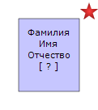
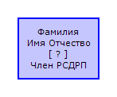

Пользовательские сноски/ссылки - это специальный тип данных в персональных записях, предназначенный для всевозможных разноплановых пометок. По стандарту, конкретного узкого применения они не несут и служат исключительно для удобства пользователя, как вариант коротких заметок.
Редактирование сносок выполняется на закладке "Ссылки/сноски" основного диалога редактирования персональных записей.
В программе GEDKeeper у пользовательских сносок есть дополнительное специфическое применение: для вывода в диаграммах деревьев у персон специальных отметок. К примеру, если человек воевал в Великую Отечественную войну - можно задать такую сноску и тогда в древе у этого человека будет отображаться красная звезда, если погиб - то при соответствующей пометке звезда будет с черным кантом.
Предопределенные сноски для отображения в древе:
 |
СССР:ВОВ:Труженик тыла |
 |
СССР:ВОВ:Участник боевых действий |
 |
СССР:ВОВ:Погиб в бою |
 |
РИ:Георгиевский кавалер |
 |
СССР:Репрессирован |
 |
СССР:Член РСДРП/ВКП(б)/КПСС |
 |
Вероисповедание:Ислам |
 |
Вероисповедание:Католицизм |
 |
Вероисповедание:Православие |
 |
Вероисповедание:Старообрядчество |
В дальнейшем, по мере необходимости в программу будут добавляться и другие типы сносок.
Включить отображение сносок на древе можно опцией "Дополнительные символы" в меню "Сервис\Настройки" на закладке "Диаграммы\Родословные древа".

При использовании типа сноски "Заметка в дереве" и включении опции "Показывать специальные заметки" в "Сервис\Настройки\Диаграммы\Родословные древа", в дереве будет также отображение текста сносок в карточке персоны.
